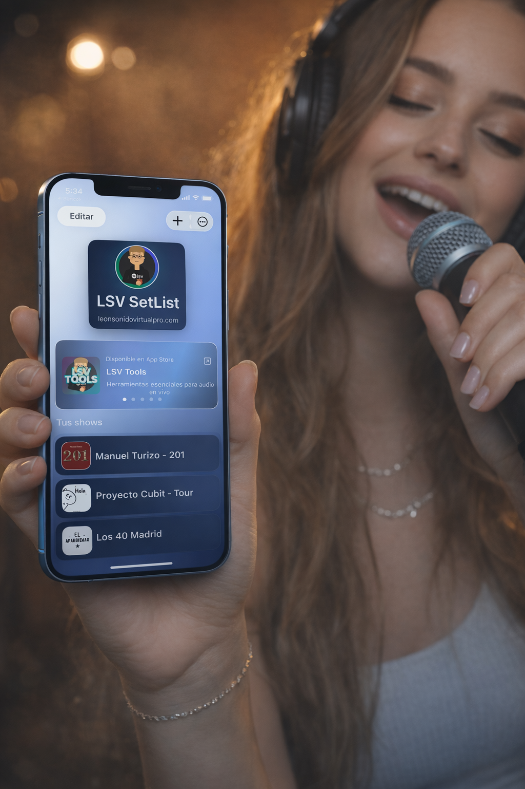
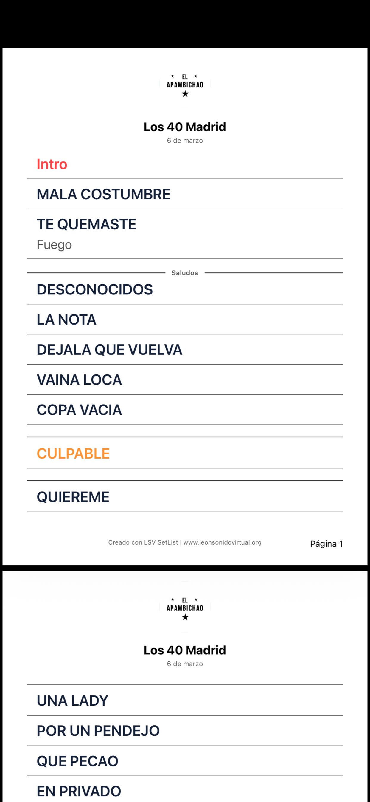
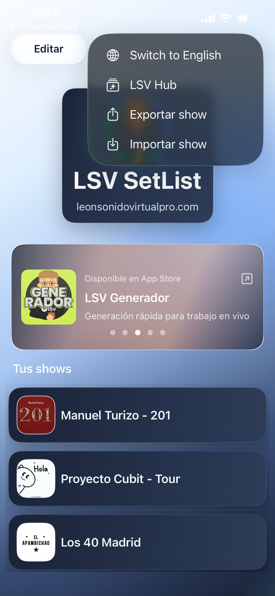
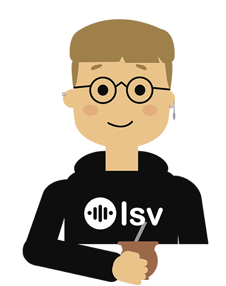
LSV SetList te ayuda a crear, organizar, reutilizar y exportar shows completos sin tener que empezar desde cero cada vez. Pensada para músicos, cantantes, directores musicales, técnicos y equipos de producción que necesitan orden, velocidad y claridad real.
Disponible en español e inglés. Misma experiencia en iPhone, iPad y Android.
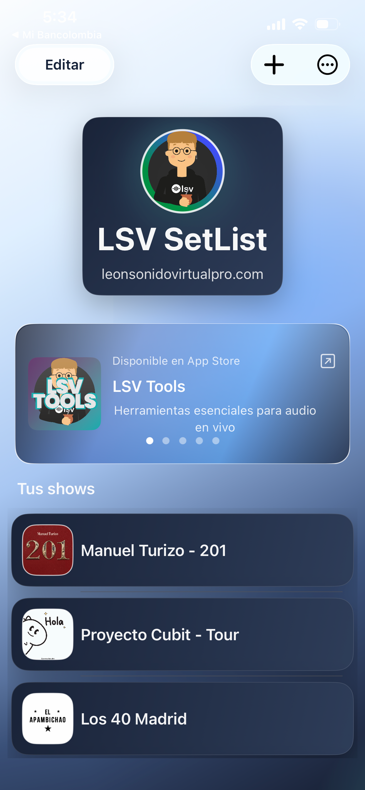
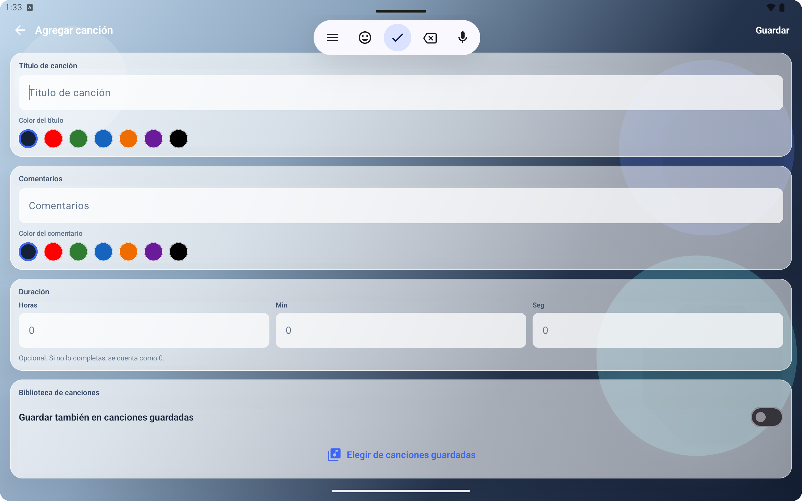
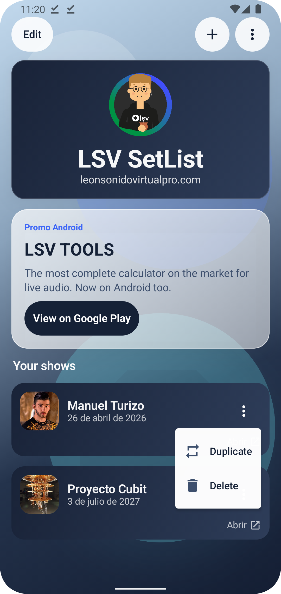
Problema
Muchos músicos, cantantes y equipos de producción siguen armando setlists de forma manual: copiando canciones, repitiendo notas, reescribiendo comentarios, reorganizando repertorios y exportando todo a último momento. Eso consume tiempo, genera errores y vuelve más desordenada la preparación del vivo.
Solución
La app te permite crear, reutilizar, editar, duplicar, exportar e imprimir setlists profesionales en minutos. No es solo una app para escribir canciones: es una herramienta para agilizar la preparación de shows, mantener el orden del escenario y compartir información de forma prolija con todo el equipo.
Funciones destacadas
LSV SetList te permite agregar a cada canción la información que realmente hace falta para trabajar con claridad:
Reutilización inteligente
Guardá canciones reutilizables por artista, agregá temas ya existentes a nuevos shows y mantené cada repertorio bajo control.
Exportación profesional
La app exporta e importa shows completos entre dispositivos, y también permite compartir listas de canciones guardadas por artista. Cuando necesitás una salida profesional, podés generar PDFs listos para ensayo, escenario o producción.
Trabajo en vivo
En vivo se necesita tener todo claro, rápido y visualmente limpio. LSV SetList fue pensada para eso: ayudarte a llegar con el show mejor ordenado, reducir errores y mantener el control del repertorio aún cuando hay cambios de último momento.
Compatibilidad
Trasladá tus shows y tus listas de artistas entre cualquier dispositivo para trabajar con comodidad sea donde sea que estés.
Vistas de muestra



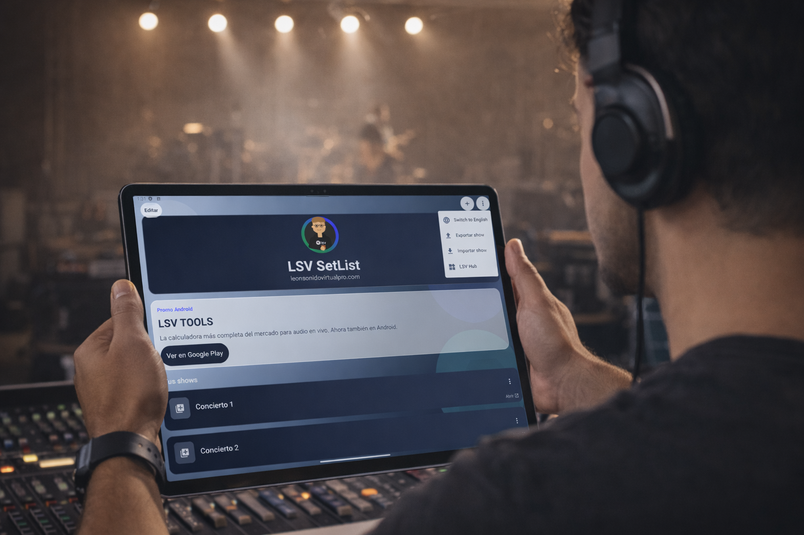
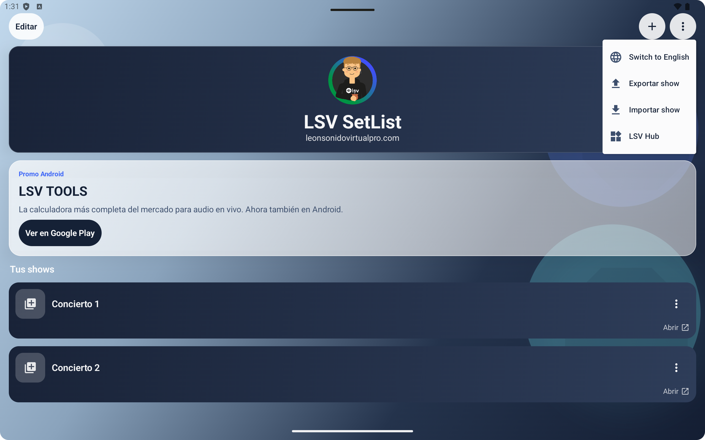
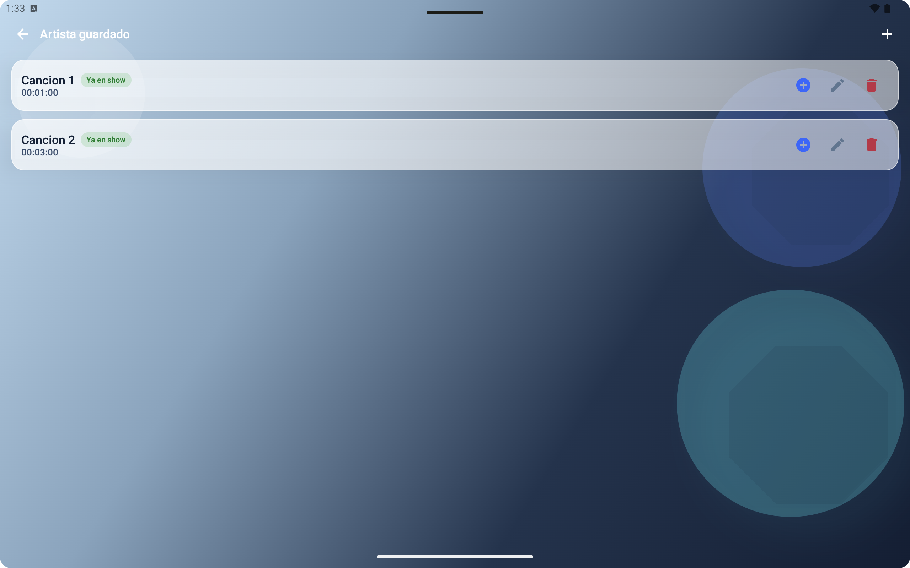
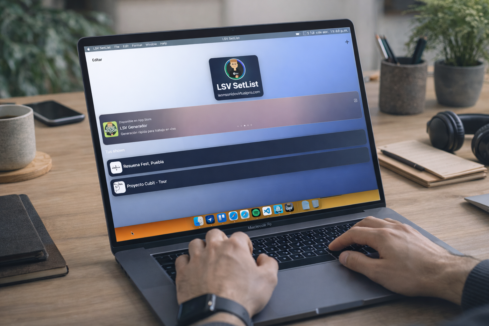


"Lo que más me sirve es no tener que volver a armar todo desde cero. Reutilizo canciones, ajusto el orden y en minutos tengo el show listo."
"La parte de exportar PDF y dejar todo prolijo para compartir con la banda o producción suma muchísimo."
"Se nota que está hecha con criterio de trabajo real. No es solo para escribir canciones, es para organizar mejor el vivo."
Descarga